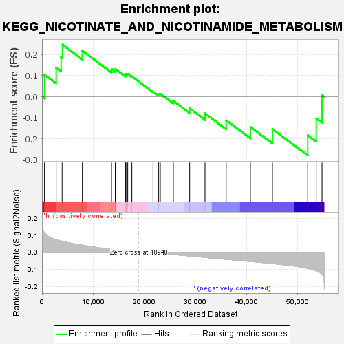
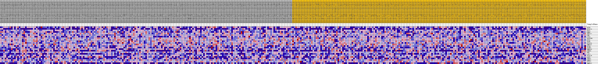

| | | Dataset | VCAN.VCAN.cls#h_versus_l.VCAN.cls#h_versus_l_repos |
| Phenotype | VCAN.cls#h_versus_l_repos |
| Upregulated in class | l |
| GeneSet | KEGG_NICOTINATE_AND_NICOTINAMIDE_METABOLISM |
| Enrichment Score (ES) | -0.2790446 |
| Normalized Enrichment Score (NES) | -0.9223175 |
| Nominal p-value | 0.57556933 |
| FDR q-value | 1.0 |
| FWER p-Value | 1.0 |
Table: GSEA Results Summary

Fig 1: Enrichment plot: KEGG_NICOTINATE_AND_NICOTINAMIDE_METABOLISM
Profile of the Running ES Score & Positions of GeneSet Members on the Rank Ordered List
| SYMBOL | TITLE | RANK IN GENE LIST | RANK METRIC SCORE | RUNNING ES | CORE ENRICHMENT | | 1 | NT5E | na | 486 | 0.112 | 0.1048 | Yes |
| 2 | NT5C1A | na | 2780 | 0.073 | 0.1378 | Yes |
| 3 | BST1 | na | 3734 | 0.066 | 0.1873 | Yes |
| 4 | NNMT | na | 4014 | 0.063 | 0.2467 | Yes |
| 5 | NUDT12 | na | 7897 | 0.041 | 0.2179 | No |
| 6 | PNP | na | 13600 | 0.016 | 0.1313 | No |
| 7 | CD38 | na | 14344 | 0.014 | 0.1318 | No |
| 8 | NADSYN1 | na | 16351 | 0.007 | 0.1026 | No |
| 9 | NT5C | na | 16437 | 0.007 | 0.1080 | No |
| 10 | NADK | na | 16781 | 0.006 | 0.1076 | No |
| 11 | NT5C3A | na | 17589 | 0.003 | 0.0965 | No |
| 12 | NMNAT1 | na | 21727 | -0.002 | 0.0237 | No |
| 13 | NT5M | na | 22716 | -0.005 | 0.0106 | No |
| 14 | NAMPT | na | 22845 | -0.005 | 0.0134 | No |
| 15 | NMNAT3 | na | 23153 | -0.006 | 0.0138 | No |
| 16 | ENPP3 | na | 25709 | -0.013 | -0.0195 | No |
| 17 | NNT | na | 28906 | -0.022 | -0.0553 | No |
| 18 | AOX1 | na | 31908 | -0.030 | -0.0793 | No |
| 19 | NT5C1B | na | 36053 | -0.041 | -0.1123 | No |
| 20 | QPRT | na | 40787 | -0.054 | -0.1434 | No |
| 21 | ENPP1 | na | 45101 | -0.066 | -0.1541 | No |
| 22 | NMRK1 | na | 52003 | -0.094 | -0.1831 | No |
| 23 | NT5C2 | na | 53675 | -0.108 | -0.1032 | No |
| 24 | NMNAT2 | na | 54805 | -0.130 | 0.0084 | No |
Table: GSEA details [plain text format]

Fig 2: KEGG_NICOTINATE_AND_NICOTINAMIDE_METABOLISM
Blue-Pink O' Gram in the Space of the Analyzed GeneSet
Fig 3: KEGG_NICOTINATE_AND_NICOTINAMIDE_METABOLISM: Random ES distribution
Gene set null distribution of ES for KEGG_NICOTINATE_AND_NICOTINAMIDE_METABOLISM